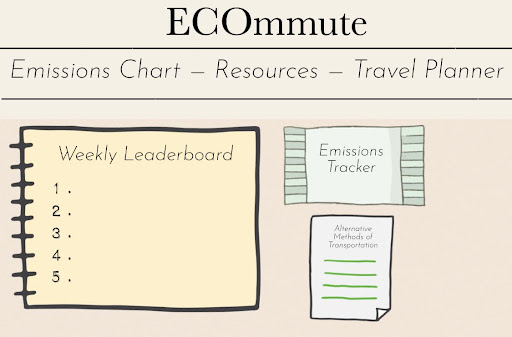
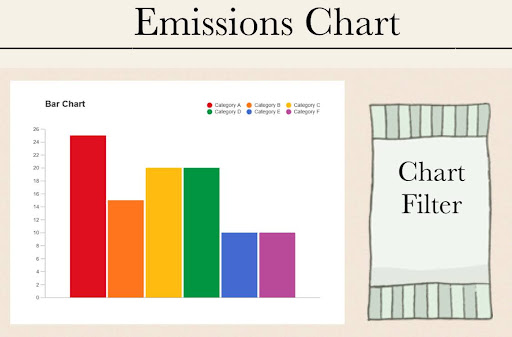
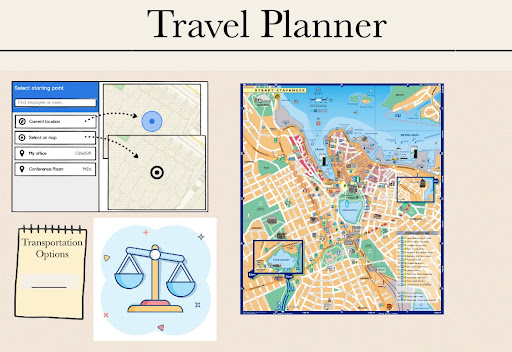
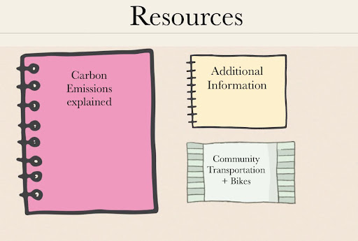

Bio: With experience in full-stack development as a Software
Developer for BUILD, as well as an avid cyclist, Kevin manages the
team with the goal of promoting sustainability.
Takuto Ban
Role: Backend Engineer
Bio: Takuto’s experience as a software engineer intern at a
startup, along with coursework on database systems, enables him to
construct the application functionality and backend logic.
Clara Butler
Role: Front-End Developer
Bio: With experience using CSS, HTML, and JavaScript, Clara
focuses on creating an engaging and user-friendly design.
Aryan Pothanaboyina
Role: Documentation Lead
Bio: Aryan’s experience in personal coding projects and
statistics allows him to present the information in a clear and
concise manner.
Overview
Our project, ECOmmute, is a web application that promotes environment
friendly methods of transportation. With the deprecation of the ozone
layer, and rising global temperatures due to carbon emissions, ECOmmute
aims to both encourage and facilitate cleaner methods of transportation.
Our target audience is anyone who commutes / travels, but more
specifically UMass students. At its core, ECOmmute is a
transportation-based emissions tracker. It tracks the carbon emissions
of its users based on their daily commute. Users log their commute, then
the application calculates emissions based on their transportation
choices. There are features such as a weekly leaderboard for lowest
carbon emissions as well as personalized recommendations for alternative
methods of transportation such as biking, carpooling and public
transportation. This effectively encourages and promotes alternatives
for those who need that extra little bit of motivation. We can also
utilize map based features for public transportation and biking
accessible, as well as ridesharing / carpooling. Overall, our project
aims to encourage self-awareness in regards to one’s carbon footprint,
and be more proactive in fighting against global warming.
Application Parts
ECOmmute is nothing without its features. One, and likely the most
important, of these is the emissions tracker. Specific to each user,
whenever a user logs their commute, ECOmmute will automatically
calculate their carbon emissions based on the length and method of
transportation for that commute. It will then add that number to their
cumulative emission total. By encouraging users to log their commutes,
this will make users more aware of their carbon footprint and
environmental impact.
Another important feature is the weekly leaderboard for least carbon
emissions. Every week, ECOmmute compiles a list of the top 10 users with
the least carbon emissions. Throughout the week a user can see their
current spot on the leaderboard. Those at the very top will be
encouraged to avoid carbon heavy commuting to maintain their spot, while
those at the bottom will feel an obligation to do better. This friendly
challenge encourages users to limit their output, effectively promoting
carbon mindfulness with the help of human competitive nature.
Additionally, ECOmmute will give personalized recommendations for
alternative modes of transportation. This could be based on personal
interests (biking), or even geolocational data (near public
transportation or bike routes). This could even be expanded to a
user-to-user recommendation system, where users share their insight on
what others can do to improve their carbon emissions.
Data Requirements
ECOmmute provides a community for users to present their commute
progress with each other, in order for users to advocate for
environmental awareness and promote low-carbon transportation modes with
the entire world. To facilitate this, user profile information must be
collected for display in the application. This includes but not limited
to: username / name, age and birthday, gender, email address, phone
number, and profile picture. These demographics help each user create
their own identity inside the application, which contributes to a more
lively, tightly knit user experience. Some other potential features
could include a follower system, where users can follow other users to
easily check in on their recent activities, resulting in an engaging
network in the community that promotes environmental awareness even
more.
ECOmmute is an web application that could be accessed from a variety of
devices, therefore in order to maintain a consistent user experience, a
user authentication system must be implemented. At the time of account
creation, users also create a password associated with each account.
This password would then be used to communicate with our application
server, which verifies the identity of the user, and responds back with
application data. User authentication could be implemented using the
bearer token method, where a token is included in every response from
the server at the time of login, which is used to authenticate every
action made by the user. There are many ways to implement this method,
which includes OAuth and JSON Web Tokens (JWT), and kept track using
local or session storage. Another method of authentication is using
cookies, which is a similar concept but the web browser automatically
includes the cookies for each request from the user. This allows for a
smoother developer experience.
The main data handled by ECOmmute is the commute logs, which ties to the
main functionality of the application. These logs are made by the users
inside our application, and includes information about the commute, such
as mode of transportation (walk, bike, scooter, bus, train, carpool,
etc.), start and finish location/time, and additional comments about the
commute. These data would be sent to our server, which calculates the
approximate carbon emission of the commute, and updates the respective
user’s total carbon footprint and activities, which then notifies
related users about the commute log. This is the key component of the
application, therefore these data should be treated carefully and
measured as accurately as possible.
The user’s geographical location would also be used in ECOmmute. For
each log we receive the location data of the commute of the user. The
database takes note of this, and collects statistics on what kind of
transportation mode is popular for an area. While the user is active on
our application, we track their geographical location and make
suggestions based on it. There are many potential possibilities for this
recommendation system, which could take into account external
information such as weather and public transport schedule, using their
respective APIs.
In summary, the overall functionality of ECOmmute depends heavily on
these data in order to promote an active community of eco-friendly
commutes. These data are collected from users as well as external APIs,
and the integration of these types of data creates a seamless user
experience that encourages users to be aware of carbon emissions.
Wire Frames
The wireframes for ECOmmute have been designed to present the
transportation statistics with a simple UI to filter data. The homepage
highlights the website's main applications. This will include the
emissions tracker, weekly leaderboard, and recommendations for
alternative methods of transportation.

Next, the emissions chart will present data that can be arranged by
vehicle type, fuel type, and distance traveled. It will take into
account communal travel and will show the carbon emissions per person
based on the search filter.

Next, the travel planner will allow users to input their current
location and desired destination. It will also allow the user to input
their methods of transportation. It will then compare the carbon
emissions, also showing the total time of the trip. Additionally, it
will also show potential community transportation options.

Lastly, the final wireframe will be a resources page. This will provide
information on what carbon emissions are and how they affect the
environment. It will also show how to reduce carbon emissions, such as
providing options for communal transportation based on your location.
This wireframe will also provide outside resources in case anyone wants
to learn more about the topics relating to ECOmmute.

Real-World Connection
As evidenced by the picture above, global temperatures have been on a
steady rise for the past century. With it comes many complications in
regards to the future state of the world, leading to the question: What
can we as individuals do about this?
ECOmmute is a response to these growing concerns over environmental
issues. With rising sea levels worldwide due to melting glaciers, as
well as air quality worsening in cities all around, there is an
increasing level of panic for individuals who care about the quality of
the Earth which we inhabit. Of course, many causes of these issues we
cannot directly stop, such as deforestation or corporation-based carbon
emissions. However, one thing we can control is our own individual
carbon footprint, which ECOmmute hopes to transform into part of one’s
daily routine.
Overall, ECOmmute isn’t trying to singlehandedly solve the global
warming crisis that has been haunting humanity for decades. Rather, it
is trying to encourage awareness at the individual level, spreading
mindfulness in hopes of rallying support for environmental legislation
and eliminating the “global warming isn’t real” mindset.
Integrative Experience
The creation of ECOmmute combines the skills and knowledge from the
different fields of study and aligns well with the main criteria of the
Integrative Experience requirements. Developing ECOmmute allows us to
reflect as a group on information we learned in our early years as
undergraduate students and apply it towards finding a solution to a
complex, major issue that affects all of us. This project ties in
coursework from domains like environmental science, data analytics, user
experience, and web development. It also incorporates our personal
interests in sustainability and technology. The foundation of ECOmmute
depends on prior knowledge of carbon emissions, the effect of them on
the environment, and how to examine carbon emission data to give
recommendations for strategies to reduce one’s carbon footprint. Through
the development of this project, we will work together and combine our
different skills and knowledge gained through our diverse experiences
and previous studies to create an application to help users understand
and work towards reducing their carbon emissions. One of the Integrative
Experience criteria involves the application of knowledge learned in
General Education courses to solve new real-world problems, and this
project embodies exactly that. We will be connecting our prior knowledge
with web programming to make strides towards solving the real-world
problem of climate change.